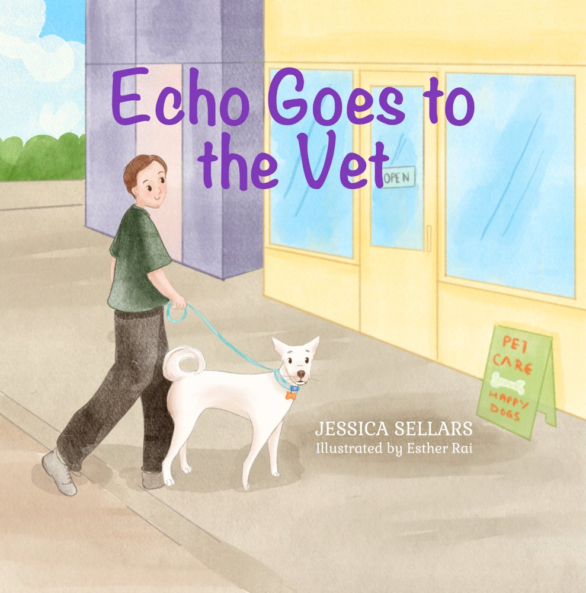

Echo Goes to the Vet: my first book in rhyme
Rhyme looks easy on the page. Getting every line to land when it’s read out loud is another thing entirely.
The story so far · Part 4 of 5
Echo Goes to the Vet is Echo’s second book, and my first one written in rhyme. It follows Echo from the couch to the vet’s office: a gentle, reassuring story for kids who get nervous about check-ups, built from our own real trips.

Why rhyme is hard
A picture book gets read out loud, often by a tired grown-up at bedtime. A rhyme only works if the rhythm carries you. If one line has an extra beat, the reader stumbles, and the spell breaks.
So I read every page out loud, over and over, and changed a lot of words that rhymed fine but didn’t flow. Finding a rhyme was the easy part. Finding a rhyme that still said exactly what I meant took much longer.
Waiting on the art
The words were done in early October. Then came the waiting while Esther Rai, who also illustrated Echo’s ABC, painted the pages. I had planned to launch around Thanksgiving, but everything came together sooner, and the book launched on October 31.
One story, many ways to read it
- Paperback and Kindle, including Kindle Unlimited.
- Hardcover through Barnes & Noble Press, matching Echo’s ABC.
- Audiobook, narrated by David R Piper. Hearing someone else read my rhymes aloud, and having them work, was a wonderful moment.
- Spanish: Echo va al Vet. The full word veterinario didn’t fit on the cover, so the title got shorter. You can read about how I chose my translators.
- Mandarin is in the works.
If you’d like a copy for your classroom, clinic or story time, email me at hello@waypointink.com.